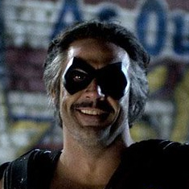

Rorschach
Rorschach usa una máscara inspirada en las manchas de tinta del test de Rorschach, que el personaje considera su verdadera cara, este antihéroe continúa su batalla solitaria contra el crimen mucho después de que los vigilantes se conviertan tanto en personajes detestables como ilegales.
Ver más

Silk Spectre
Laurel Jane Juspeczyk, más conocida como Laurie, era la hija de Sally Jupiter y es el segundo personaje en ser conocido como Silk Spectre. Después de los acontecimientos que ocurrieron en 1985, Laurie adoptó el alias de The Comedienne, rindiendo homenaje a su padre, El Comediante.
Ver más

Dr. Manhattan
El Dr. Manhattan queda encerrado accidentalmente en una cámara de pruebas durante un experimento de física nuclear, fue desintegrado completamente. En vez de morir, adquiere poderes que le permiten manipular la energía de la materia, usándolos por primera vez para reconstruir su cuerpo.
Ver más

El Comediante
Se le describe de diversas maneras como "deliberadamente amoral" con un "cinismo practicado". Siempre en la identidad del Comedian, describe el mundo como una broma sádica que solo él entiende, pero al final su cinismo practicado se hace añicos cuando descubre un complot que considera una "broma pesada" que incluso él no puede creer que alguien se atrevería a hacer.
Ver más